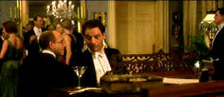

| Gosford Park (SE)/ A, A |
| Universal/2001/137/ANA
2.35 |
Yes, of course, Gosford Park is a
murder mystery, but its just an excuse for getting a closer look at the
fascinating characters assembled at the opulent mansion of Sir William
McCordle. Director Robert Altman gets my Fred Astaire Award for
Gosford Park. Altman dances through the scenes with uncanny rhythm, making
everything seem so effortless, like Astaire dancing up walls. Gosford
Park is also Robert Altman's most relaxed film. Nothing strains.
Everything flows with natural precision. It never fails to hold your
attention and the multitude of characters live beyond celluloid reality.
The emphasis is not on the done it but on the who they are.
It's a witty and satirical examination of the relationships between the upstairs and downstairs
people that inhabit the world of Gosford Park, a early twentieth century
classic British manor house. The interplay between the relatives of a once
powerful financial family beginning to see the first frayed edges of
change is perfect fodder for back-biting. Not to mention the natural
back-biting of the downstairs crew.
 |
|
Actor Ivor Novello chats
with Hollywood B producer Morris Weissman. ©Universal
|
Terrific ensemble cast is perfectly in synch with director Altman. One
performance seems better than the next. You've gotta love Helen Mirren's fantastic performance as the center of
the downstairs servants crew, housekeeper Mrs. Wilson. This woman really
keeps this house running. She anticipates virtually everything. It's a
great role. Upstairs maid Elsie likewise gets a stunning interpretation
from Emily Watson. And Alan Bates as butler Jennings totally disappears
into the role. Jeremy Northram has never been better than as the sort of
outsider relative, Ivor Novello, a Hollywood leading man. Maggie Smith as
her ladyship is droll to the nth degree and Kelly MacDonald as her maid is
absolutely refreshing and and uncannily true.
Altman's peripatetic camera moves with unusually perfect
grace and the signature overlapping dialogue of Altman's hasn't worked as
well since M.A.S.H. Production design by Stephen Altman is
wonderful. Costume design by Jenny Beavan is perfectly on target. It all
meshes beautifully. This is a wonderful production from start to
finish.
This DVD transfer of Gosford Park is a
stunner. It looks good enough to have lit up theater screens, in focus
too. The images are very sharp without being edgy. It perfectly clean.
Color is slightly under saturated, reflecting the artistic intent. The
lighting is meticulously captured. Blacks are lush. Details of the
production are richly depicted. The 5:1 Dolby Digital mix is outstanding.
Dialogue is perfectly enunciated and consistently discernible. The
peripheral action integrates as more than a hum or blur but as multiple
conversations.
Two commentaries grace the Gosford Park special edition.
Robert Altman, ever uncomfortable about commentaries but growing more
comfortable with each new one, provides his insights clearly on one track.
Production designer Stephen Altman and producer/actor David Levy join
Altman, adding a welcome addition to the commentary rhythm. The second commentary from screenwriter Julian
Fellowes is historically informative. In addition to the commentaries,
there are deleted scenes, a solid making-of featurette, an entertaining
Q& A filmed in front of a Hollywood audience, and a short piece on the
production details.
|
|
|
|

Selections from the Feature
Archive include articles on Akira Kurosawa, Frank Darabont, Blonde Bimbos, Hollywood Street Gangs, or Vietnam: The Hollywood Pariah, and many
more....

What actor would you vote whose screen persona best exemplified the
fabric of the president of the United States? Check act Acting Presidential for a look at the many
actors who have coveted The Oval Office.
 
ISF Course Instructors Jim Burns and Kevin Miller are hosting the Digital Film Forum. Join
professionals and enthusiasts for lively home theater discussion.

ISF Monitor
Calibrations in the Tristate New York area. Lots of hardware
info and frequent hardware peaks from video expert Kevin Miller. They
may be judgmental, but that's the point, isn't it. Lots of DVD reviews
plus news and more.
 Brad Lang
continues to add more interesting material to the extensive collection
at Classic
Movies. Everything from actors and actress to your
favorite directors is linked at the site. Brad Lang
continues to add more interesting material to the extensive collection
at Classic
Movies. Everything from actors and actress to your
favorite directors is linked at the site.

Click on the DVD MIA symbol for profiles of DVDs
missing in action.
Add films to the DVD MIA Master List by filling out a simple
form. Click Here
|